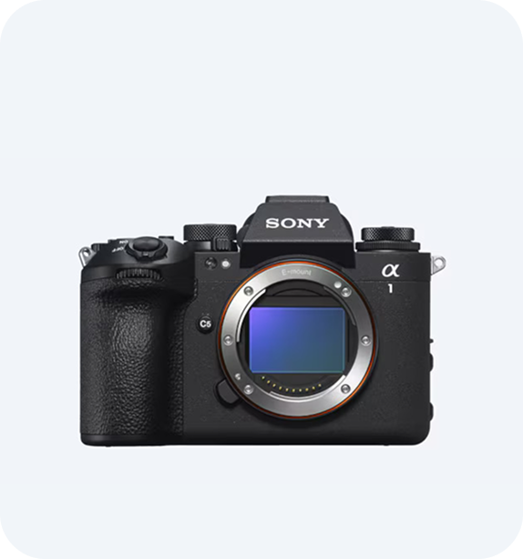
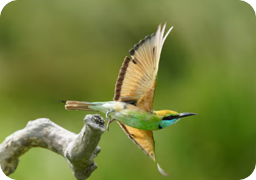
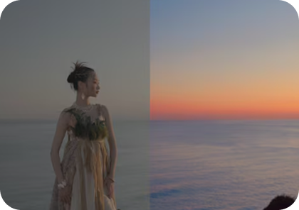

라인업
인터랙티브
핵심기술
악세서리



정상에서 또 한 번의 도약
α1 는 50MP 고해상도, AI 인식 AF, 고속 연사,
고급 워크플로우로 캡처 성공률과 작업 효율을 극대화합니다.
해상도
연속 촬영 속도
AF/AE 계산
사전 캡처
연속 촬영 부스트
손떨림 보정
LCD 모니터
50.1MP
최대 30fps
초당 120회
최대 30fps
순간 속도 조절 기능 없음
최대 5.5스톱 5축 IBIS 내장
4축 멀티 앵글
수평·수직 조정
아래 40도, 위 98도
측면 180도 회전